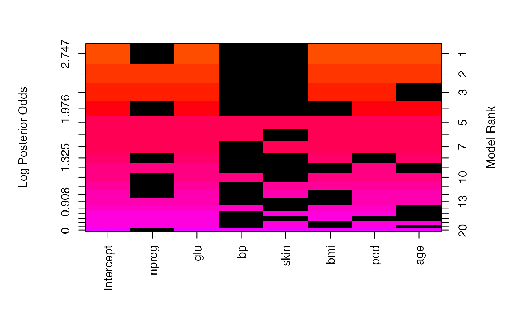

R/bas_glm.R
bas.glm.RdSample with or without replacement from a posterior distribution on GLMs
bas.glm( formula, family = binomial(link = "logit"), data, weights, subset, contrasts = NULL, offset, na.action = "na.omit", n.models = NULL, betaprior = CCH(alpha = 0.5, beta = as.numeric(nrow(data)), s = 0), modelprior = beta.binomial(1, 1), initprobs = "Uniform", include.always = ~1, method = "MCMC", update = NULL, bestmodel = NULL, prob.rw = 0.5, MCMC.iterations = NULL, control = glm.control(), laplace = FALSE, renormalize = FALSE, force.heredity = FALSE, bigmem = FALSE )
| formula | generalized linear model formula for the full model with all predictors, Y ~ X. All code assumes that an intercept will be included in each model. |
|---|---|
| family | a description of the error distribution and link function for exponential family; currently only `binomial()` with the logistic link and `poisson()` with the log link are available. |
| data | data frame |
| weights | optional vector of weights to be used in the fitting process. May be missing in which case weights are 1. |
| subset | subset of data used in fitting |
| contrasts | an optional list. See the contrasts.arg of `model.matrix.default()`. |
| offset | a priori known component to be included in the linear predictor; by default 0. |
| na.action | a function which indicates what should happen when the data contain NAs. The default is "na.omit". |
| n.models | number of unique models to keep. If NULL, BAS will attempt to enumerate unless p > 35 or method="MCMC". For any of methods using MCMC algorithms that sample with replacement, sampling will stop when the number of iterations exceeds the min of 'n.models' or 'MCMC.iterations' and on exit 'n.models' is updated to reflect the unique number of models that have been sampled. |
| betaprior | Prior on coefficients for model coefficients (except
intercept). Options include |
| modelprior | Family of prior distribution on the models. Choices
include |
| initprobs | vector of length p with the initial inclusion probabilities
used for sampling without replacement (the intercept will be included with
probability one and does not need to be added here) or a character string
giving the method used to construct the sampling probabilities if "Uniform"
each predictor variable is equally likely to be sampled (equivalent to
random sampling without replacement). If "eplogp", use the
|
| include.always | A formula with terms that should always be included in the model with probability one. By default this is `~ 1` meaning that the intercept is always included. This will also override any of the values in `initprobs` above by setting them to 1. |
| method | A character variable indicating which sampling method to use: method="BAS" uses Bayesian Adaptive Sampling (without replacement) using the sampling probabilities given in initprobs and updates using the marginal inclusion probabilities to direct the search/sample; method="MCMC" combines a random walk Metropolis Hastings (as in MC3 of Raftery et al 1997) with a random swap of a variable included with a variable that is currently excluded (see Clyde, Ghosh, and Littman (2010) for details); method="MCMC+BAS" runs an initial MCMC as above to calculate marginal inclusion probabilities and then samples without replacement as in BAS; method = "deterministic" runs an deterministic sampling using the initial probabilities (no updating); this is recommended for fast enumeration or if a model of independence is a good approximation to the joint posterior distribution of the model indicators. For BAS, the sampling probabilities can be updated as more models are sampled. (see 'update' below). We recommend "MCMC+BAS" or "MCMC" for high dimensional problems. |
| update | number of iterations between potential updates of the sampling probabilities in the "BAS" method. If NULL do not update, otherwise the algorithm will update using the marginal inclusion probabilities as they change while sampling takes place. For large model spaces, updating is recommended. If the model space will be enumerated, leave at the default. |
| bestmodel | optional binary vector representing a model to initialize the sampling. If NULL sampling starts with the null model |
| prob.rw | For any of the MCMC methods, probability of using the random-walk proposal; otherwise use a random "flip" move to propose a new model. |
| MCMC.iterations | Number of models to sample when using any of the MCMC options; should be greater than 'n.models'. By default 10*n.models. |
| control | a list of parameters that control convergence in the fitting
process. See the documentation for |
| laplace | logical variable for whether to use a Laplace approximate for integration with respect to g to obtain the marginal likelihood. If FALSE the Cephes library is used which may be inaccurate for large n or large values of the Wald Chisquared statistic. |
| renormalize | logical variable for whether posterior probabilities should be based on renormalizing marginal likelihoods times prior probabilities or use Monte Carlo frequencies. Applies only to MCMC sampling. |
| force.heredity | Logical variable to force all levels of a factor to be included together and to include higher order interactions only if lower order terms are included. Currently only supported with `method='MCMC'` and `method='BAS'` (experimental) on non-Solaris platforms. Default is FALSE. |
| bigmem | Logical variable to indicate that there is access to large amounts of memory (physical or virtual) for enumeration with large model spaces, e.g. > 2^25. |
bas.glm returns an object of class basglm
An object of class basglm is a list containing at least the following
components:
the posterior probabilities of the models selected
the prior probabilities of the models selected
values of the log of the marginal likelihood for the models
total number of independent variables in the full model, including the intercept
the number of independent variables in each of the models, includes the intercept
a list of lists with one list per model with variables that are included in the model
the posterior probability that each variable is non-zero
list of lists with one list per model giving the GLM estimate of each (nonzero) coefficient for each model.
list of lists with one list per model giving the GLM standard error of each coefficient for each model
the GLM deviance for each model
the prior distribution on models that created the BMA object
the Q statistic for each model used in the marginal likelihood approximation
response
matrix of predictors
family object from the original call
family object for prior on coefficients, including hyperparameters
family object for prior on the models
indices of variables that are forced into the model
BAS provides several search algorithms to find high probability models for
use in Bayesian Model Averaging or Bayesian model selection. For p less than
20-25, BAS can enumerate all models depending on memory availability, for
larger p, BAS samples without replacement using random or deterministic
sampling. The Bayesian Adaptive Sampling algorithm of Clyde, Ghosh, Littman
(2010) samples models without replacement using the initial sampling
probabilities, and will optionally update the sampling probabilities every
"update" models using the estimated marginal inclusion probabilities. BAS
uses different methods to obtain the initprobs, which may impact the
results in high-dimensional problems. The deterministic sampler provides a
list of the top models in order of an approximation of independence using
the provided initprobs. This may be effective after running the
other algorithms to identify high probability models and works well if the
correlations of variables are small to modest. The priors on coefficients
are mixtures of g-priors that provide approximations to the power prior.
Li, Y. and Clyde, M. (2018) Mixtures of g-priors in Generalized
Linear Models. Journal of the American Statistical Association. 113:1828-1845
doi: 10.1080/01621459.2018.1469992
Clyde, M. Ghosh, J. and Littman, M. (2010) Bayesian Adaptive Sampling for
Variable Selection and Model Averaging. Journal of Computational Graphics
and Statistics. 20:80-101
doi: 10.1198/jcgs.2010.09049
Raftery, A.E, Madigan, D. and Hoeting, J.A. (1997) Bayesian Model Averaging
for Linear Regression Models. Journal of the American Statistical
Association.
Merlise Clyde (clyde@duke.edu), Quanli Wang and Yingbo Li
data(Pima.tr, package="MASS") # enumeration with default method="BAS" pima.cch = bas.glm(type ~ ., data=Pima.tr, n.models= 2^7, method="BAS", betaprior=CCH(a=1, b=532/2, s=0), family=binomial(), modelprior=beta.binomial(1,1)) summary(pima.cch) #> P(B != 0 | Y) model 1 model 2 model 3 model 4 #> Intercept 1.0000000 1.0000 1.0000000 1.0000000 1.0000000 #> npreg 0.5684414 0.0000 1.0000000 1.0000000 0.0000000 #> glu 0.9999949 1.0000 1.0000000 1.0000000 1.0000000 #> bp 0.2198720 0.0000 0.0000000 0.0000000 0.0000000 #> skin 0.2653924 0.0000 0.0000000 0.0000000 0.0000000 #> bmi 0.7425039 1.0000 1.0000000 1.0000000 0.0000000 #> ped 0.8860972 1.0000 1.0000000 1.0000000 1.0000000 #> age 0.7459954 1.0000 1.0000000 0.0000000 1.0000000 #> BF NA 1.0000 0.4406494 0.6209086 0.4628319 #> PostProbs NA 0.1596 0.1172000 0.0991000 0.0739000 #> R2 NA 0.2938 0.3040000 0.2901000 0.2703000 #> dim NA 5.0000 6.0000000 5.0000000 4.0000000 #> logmarg NA -101.7878 -102.6072611 -102.2643268 -102.5581467 #> model 5 #> Intercept 1.000000e+00 #> npreg 1.000000e+00 #> glu 1.000000e+00 #> bp 1.000000e+00 #> skin 1.000000e+00 #> bmi 1.000000e+00 #> ped 1.000000e+00 #> age 1.000000e+00 #> BF 8.659168e-03 #> PostProbs 4.840000e-02 #> R2 3.043000e-01 #> dim 8.000000e+00 #> logmarg -1.065369e+02 image(pima.cch)  # Note MCMC.iterations are set to 1000 for illustration purposes # Please check convergence diagnostics and run longer in practice pima.robust = bas.glm(type ~ ., data=Pima.tr, n.models= 2^7, method="MCMC", MCMC.iterations=5000, betaprior=robust(), family=binomial(), modelprior=beta.binomial(1,1)) pima.BIC = bas.glm(type ~ ., data=Pima.tr, n.models= 2^7, method="BAS+MCMC", MCMC.iterations=5000, betaprior=bic.prior(), family=binomial(), modelprior=uniform()) # Poisson example data(crabs, package="BAS") #short run for illustration crabs.bas = bas.glm(satell ~ color*spine*width + weight, data=crabs, family=poisson(), betaprior=EB.local(), modelprior=uniform(), method='MCMC', n.models=2^10, MCMC.iterations=5000, prob.rw=.95)